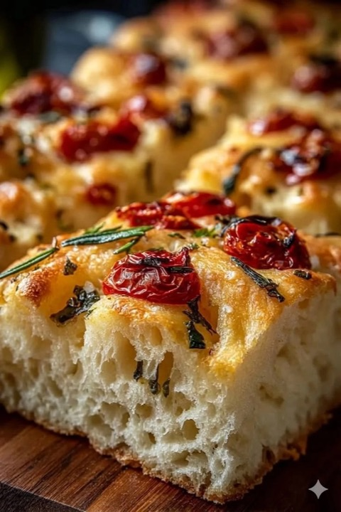
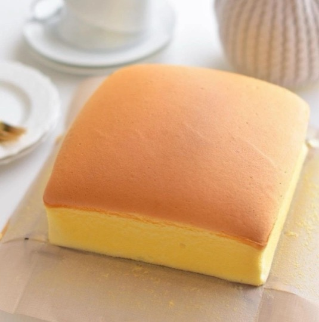
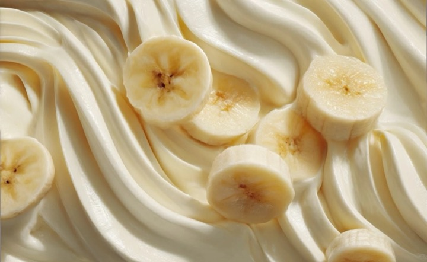
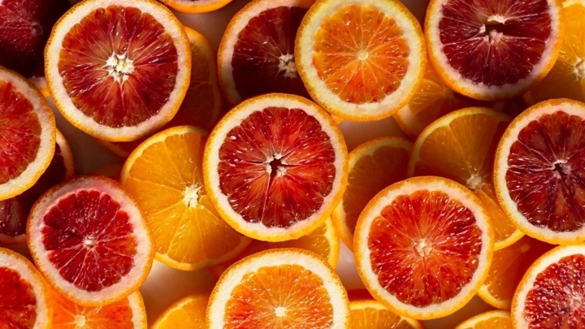
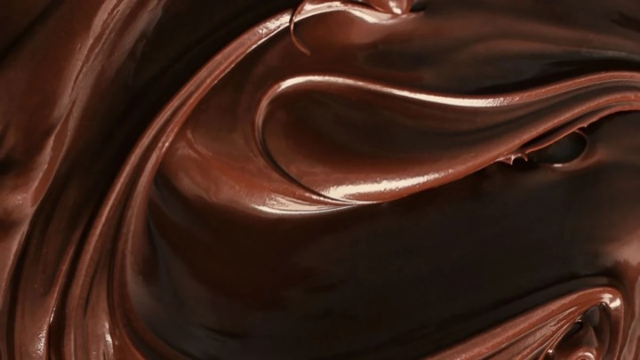

What I bake

Sourdough Focaccia 9×13 pan Bakes at 400°F Breads
Castella Cake 6×6 pan Bakes at 300°F Cakes
Banana Ogura Cake 8in round Bakes at 290°F Cakes
Orange Upside-Down Cake 8in round Bakes at 350°F Cakes
Chocolate Ganache Filling Fills 2–3 layers No bake FillingsKept by Shivani